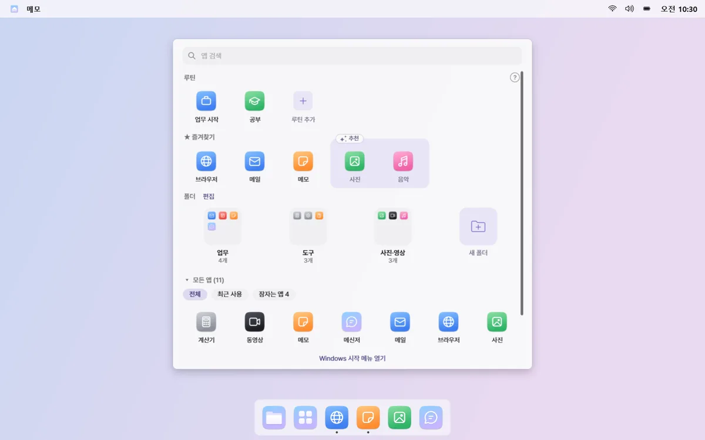
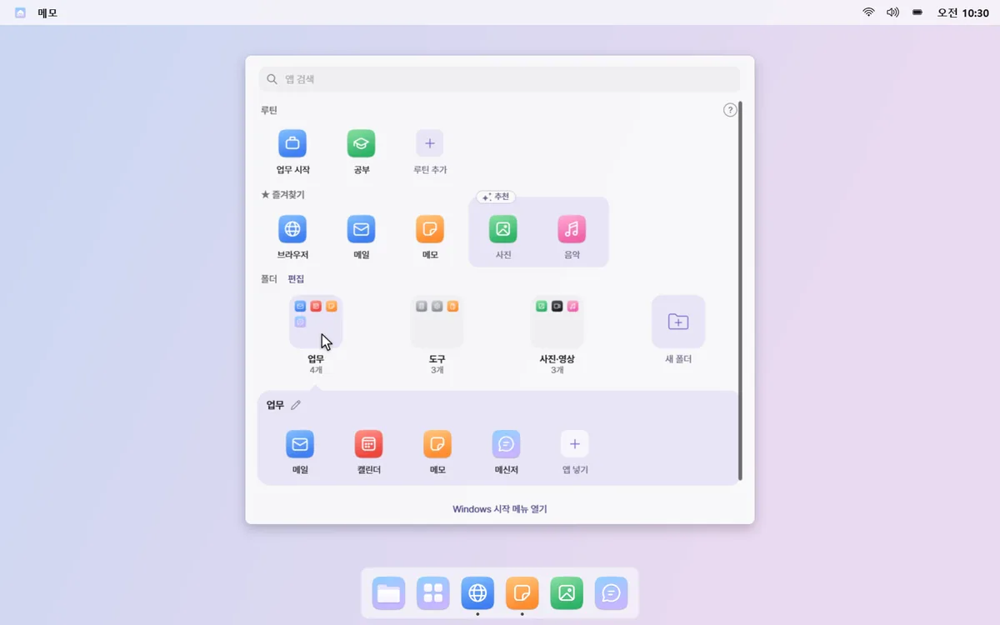
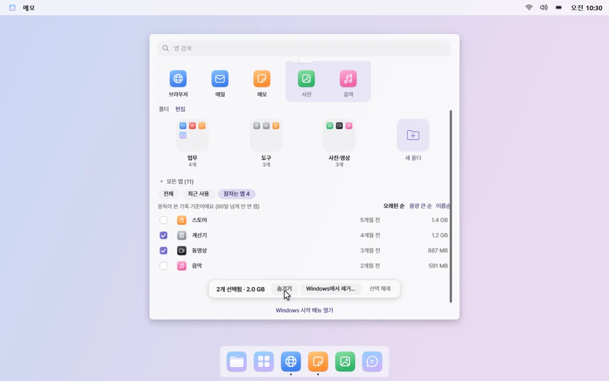

앱 모음 판
쓰는 앱만 눈앞에 두세요
독의 앱 모음을 누르면 화면 가운데에 판 하나가 떠요. 즐겨찾기, 쓰는 앱만 담은 폴더, 모든 앱이 정리된 채로 바로 보여요.
쌓여 가는 앱 · 언제 설치했는지 모를 앱이 목록에 계속 남아 있어요.
01
열자마자 찾을 수 있어요
판은 화면 전체를 덮지 않고, 열리면 바로 검색 칸에 입력할 수 있어요. 맨 위 루틴 줄에서 루틴도 바로 열어요.


02
즐겨찾기와 추천
자주 여는 앱을 즐겨찾기 줄에 고정해 두세요. 최근 자주 켠 앱은 점선 칸으로 추천되고, ＋를 누르면 즐겨찾기에 들어가요.

03
쓰는 앱만 담은 폴더
업무·소통·게임처럼 분류된 폴더에 최근에 쓴 앱만 담아 둬요. 폴더 이름과 순서는 편집 모드에서 클릭으로 바꿔요.

04
잠자는 앱 정리
60일 넘게 안 연 “잠자는 앱”을 용량과 함께 보여 줘요. 판에서 숨기거나, 골라서 윈도우 제거 창으로 지울 수 있어요.

추천과 폴더에 쓰는 실행 기록은 이 PC 안에만 남아요. 판 빈자리 오른쪽 클릭 → “자주 쓰는 앱 기록”을 끄면 기록을 멈추고 지워요. 개인정보처리방침 보기
알아 두세요
- 잠자는 앱을 지우면 앱마다 윈도우의 제거 창이 차례로 열려요. 몽독이 직접 지우지 않고, 이렇게 지울 수 없는 앱은 목록에 따로 표시돼요.